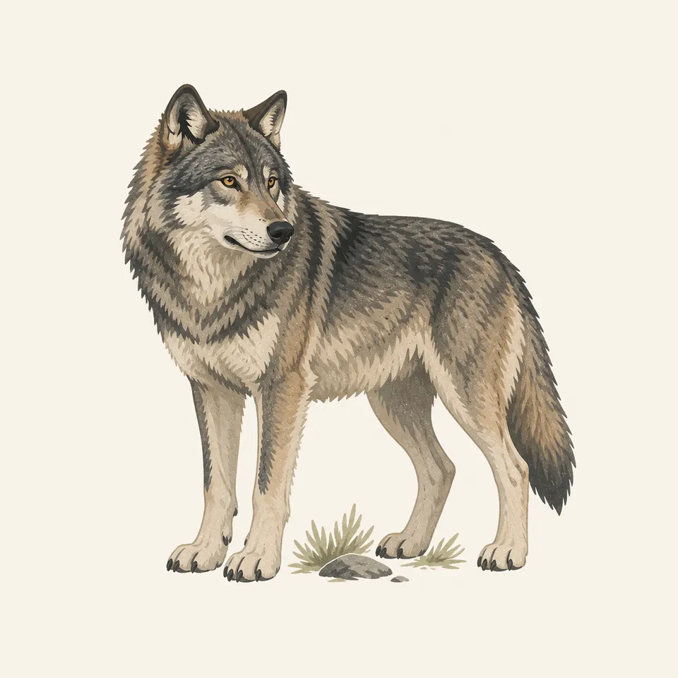
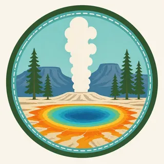

01
Old Faithful
A geyser known for rhythm rather than spectacle alone, turning heat, pressure, and time into a public act of geology.
TrailMark Archive Edition
Wyoming | Montana | Idaho
Steam rises from mineral color, rivers cut through ancient volcanic stone, and broad valleys hold wildlife with a stillness that feels older than the road.
Archive No. TM-YEL-002
National Park since 1872
Collection Mountain West Parks
Park Overview
Yellowstone is the first national park in the United States, established in 1872. Geysers breathe through the ground, hot springs hold impossible color, and open valleys gather bison, elk, wolves, and bears.
The park is not one landscape but a connected field of forces. Thermal basins, lodgepole forests, high lakes, canyon walls, rivers, grasslands, and snowbound passes all belong to the same restless volcanic system.
TrailMark treats Yellowstone as the second archive chapter because it proves the template can hold a different kind of wonder: less granite monument, more living geology, motion, steam, and scale.
Emotional Thesis
Yellowstone asks visitors to notice motion at every scale: steam leaving a vent, a river turning through a canyon, bison crossing a road, clouds dragging shadows over a valley.
Its power is not only in famous eruptions or rare wildlife sightings. It is in the feeling that the landscape is still being made, visibly and audibly, beneath your feet.
Landscape Highlights
01
A geyser known for rhythm rather than spectacle alone, turning heat, pressure, and time into a public act of geology.
02
A field of mineral blue, orange, and gold where microscopic life and hot water make the ground appear almost painted from within.
03
A river-cut canyon of pale volcanic stone, bright walls, and falling water that gives the park one of its most dramatic vertical moments.
Wildlife
Yellowstone is home to bison, elk, pronghorn, bighorn sheep, wolves, coyotes, grizzly bears, black bears, trumpeter swans, raptors, and many smaller species tied to valley, forest, river, and thermal habitats.

01
Wildlife distance is essential here; large animals can move quickly and unpredictably.
02
Roadside viewing should never block traffic or pressure animals toward people, vehicles, or thermal areas.
03
Dawn and dusk often bring more visible movement, especially in the open valleys.
Geology
Yellowstone sits above a major volcanic hot spot. Its geysers, fumaroles, mudpots, hot springs, canyon walls, and mineral terraces are surface signs of deep heat interacting with groundwater and ancient volcanic rock.
01
Thermal features are fragile and dangerous; boardwalks protect both visitors and the thin mineral crusts around hot water.
02
Geysers depend on heat, water supply, pressure, and underground plumbing that can change over time.
03
The park's canyon colors come from altered volcanic rock, oxidation, and water working through stone over long periods.
Snow retreats unevenly, rivers run full, newborn animals appear in the valleys, and steam feels especially visible in cold morning air.
Boardwalks, basins, and overlooks fill with movement while long daylight opens the park's largest circuit of landscapes.
Elk bugles, cottonwoods turn, crowds thin, and the valleys take on a quieter, more watchful atmosphere.
Snow simplifies the park into white ground, dark trees, blue shadows, and thermal clouds rising like signals through the cold.
Photography Guidance
Yellowstone photography works best when it respects space. The strongest images often come from waiting for weather, steam, light, and wildlife movement to define the frame naturally.
01
Arrive early for cooler air, visible steam, and lower boardwalk traffic around colorful springs and vents.
02
Use a long lens and keep distance; behavior and habitat tell a better story than a close, stressful image.
03
Watch how angled sun catches the canyon walls and waterfall spray, especially when clouds move quickly overhead.
Field Notes
Yellowstone feels less like a place frozen in beauty than a landscape still speaking: heat below, water above, animals moving through the open spaces between.
TrailMark Archive Journal

Badge Story
The Yellowstone badge centers thermal color and rising steam, preserving the park as a living system rather than a single scenic view.
Blue and pale mineral tones suggest hot spring water and high plateau air.
The rising steam forms the emotional center of the mark, turning geology into movement.
As the second archive badge, Yellowstone proves the system can shift from granite stillness to volcanic energy while staying recognizably TrailMark.
Archive No.002
LocationUpper Geyser Basin
ReleaseSecond Archive Mark
Stewardship / Safety
Yellowstone asks for restraint. Its most memorable places are also fragile, hot, wild, and sometimes remote, so care is part of the experience rather than a rule placed over it.
Stay on boardwalks and marked paths in thermal areas; thin crust can hide scalding water.
Give wildlife generous distance and use pullouts rather than stopping in traffic lanes.
Carry layers, water, and realistic timing; weather and drive distances can change a day quickly.
Follow all seasonal closures and bear-safety guidance, especially in quieter trail areas.
Current conditions, fees, and alerts are on the National Park Service site.
Continue the Archive
The TrailMark collection grows by giving each park its own emotional structure, not by forcing every landscape into the same mood.